ACTUAL POC · V6
화면을 읽고, 실제 주문까지
Vision Agent가 한국어 주문 화면에서 입력·클릭하고 결과를 확인한 기록입니다. 시각 검사의 추가 가치와 아직 해결되지 않은 겹침 해석도 같은 증거 기준으로 설명합니다.
2분 40초 · 1280×720 · 무음 한국어 자막 · 실제 기록 편집. 현재 모델 실행 화면이 아닙니다.
MP4 다운로드 · 한국어 자막 · 대본 · 장면별 출처
장면 바로 보기
세 결과는 서로 다른 실험입니다
| 실험 | 확인한 것 | 범위 |
|---|---|---|
| 한국어 주문 | 수량 2개·이름·이메일 입력 → 주문 완료·$24, API 201 | 최종 통합 실행 1회. 5행동·21요청·143.8초 |
| 이전 영수증 통제실험 | 기능 6/6 PASS, 결함 3/3 지적·정상 3/3 통과 | 선정한 주입 결함, 등록 가독성 기준. 현재 한국어 샘플과 별개 |
| 현재 한국어 겹침 보완 | D 위치 후보 3/3 보존, 올바른 모델 설명 0/3 | 브라우저 위치 + Vision 혼합 검사. 모델 해석 미해결 |
모두 qwen/qwen3-vl-30b-a3b-instruct 기록입니다. 주문 실행에서는 정상 차트를 잘못 지적한 시각 QA 오탐도 남았습니다. 주문 완료를 시각 QA 전체 합격으로 해석하지 않습니다. Playwright 스크린샷 비교로도 해당 화면 결함을 잡을 수 있습니다.
원본과 검토 자료
- 편집 전 실제 주문 녹화 · 동일 실행 원장 · 독립 검토
- 이전 통제실험 원응답 · 검수 기록
- 겹침 대표 원장 · 겹침 검토·모든 시도 집계
- 원본 출처·SHA-256 · 편집 구간·배속·확대 정보 · 영상 검수 범위
확대·자막·박스는 편집 주석입니다. 주황 점선은 저장된 위치 후보이며 사람이 확정한 결함 표시가 아닙니다. 본 영상 제작 중 추가 모델 호출은 없었습니다.
스토리보드
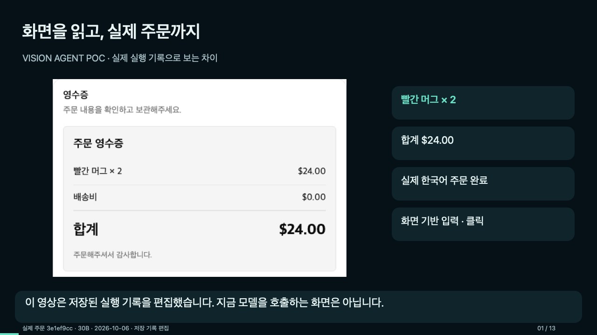
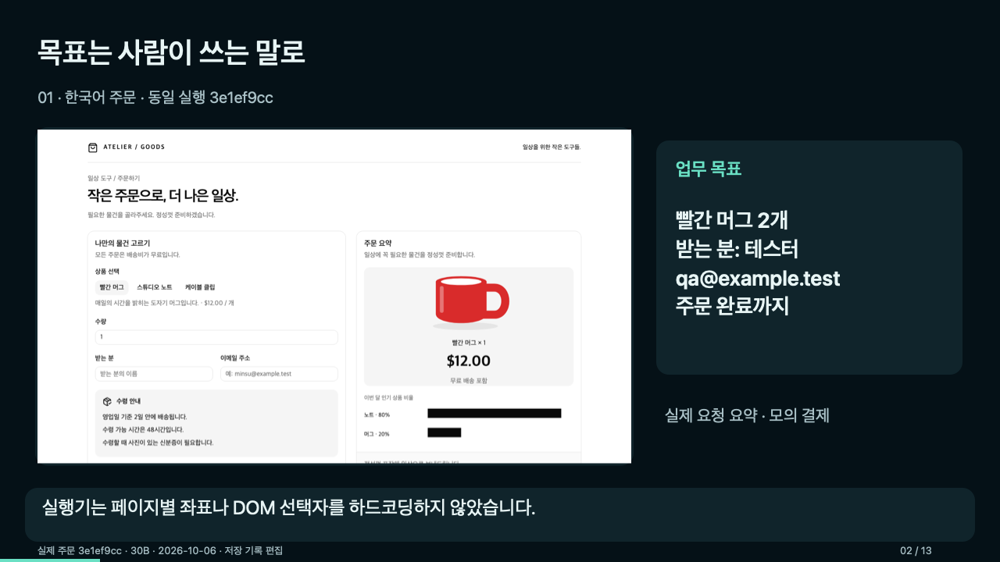
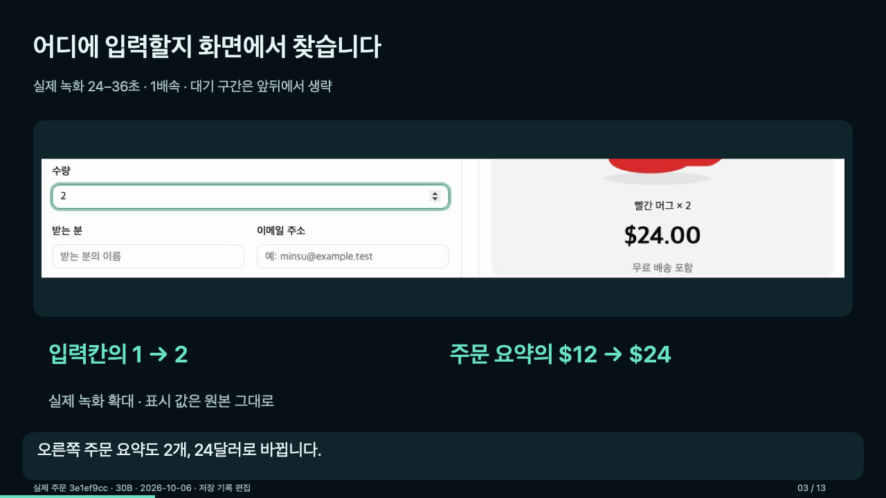
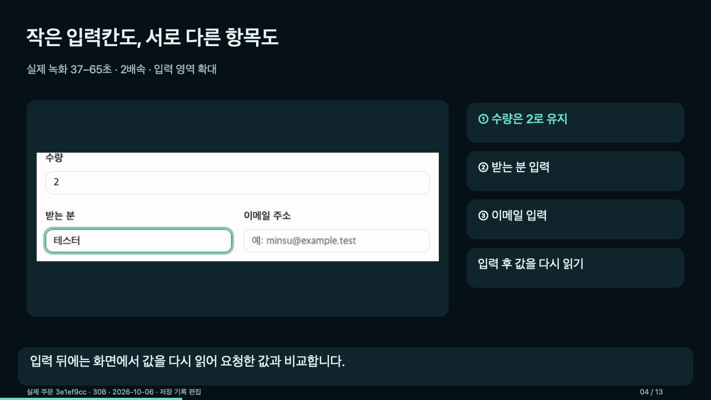
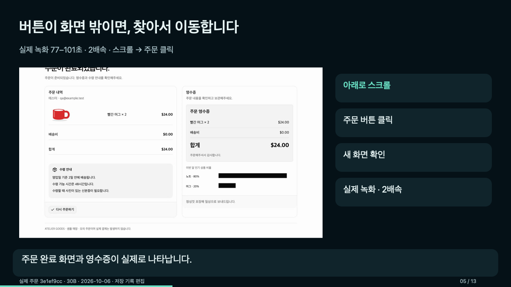
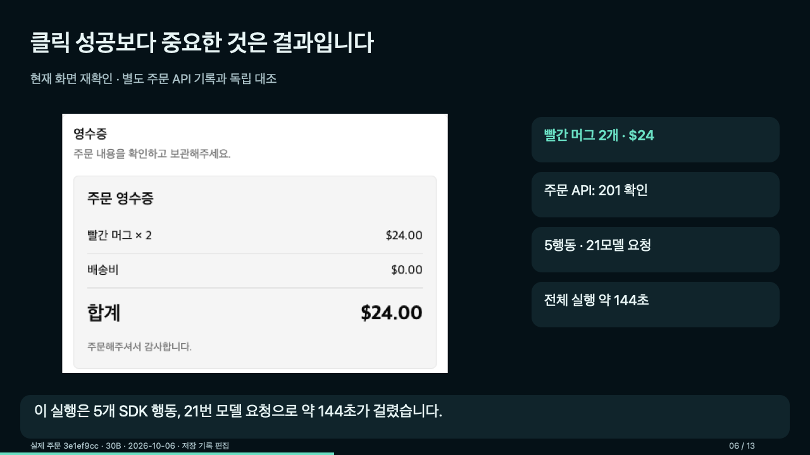
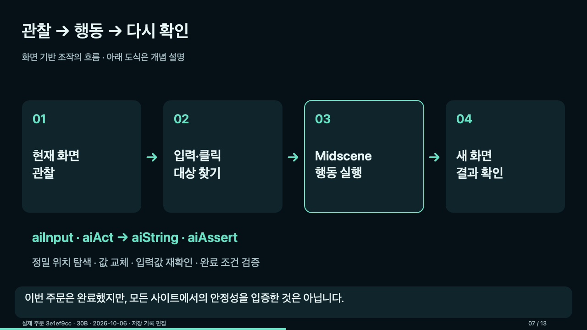
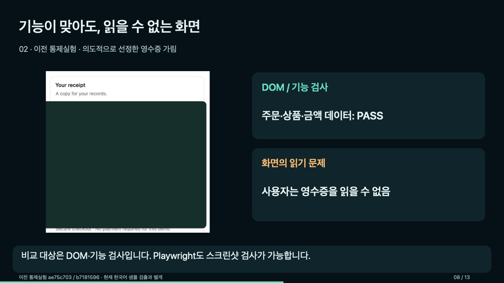
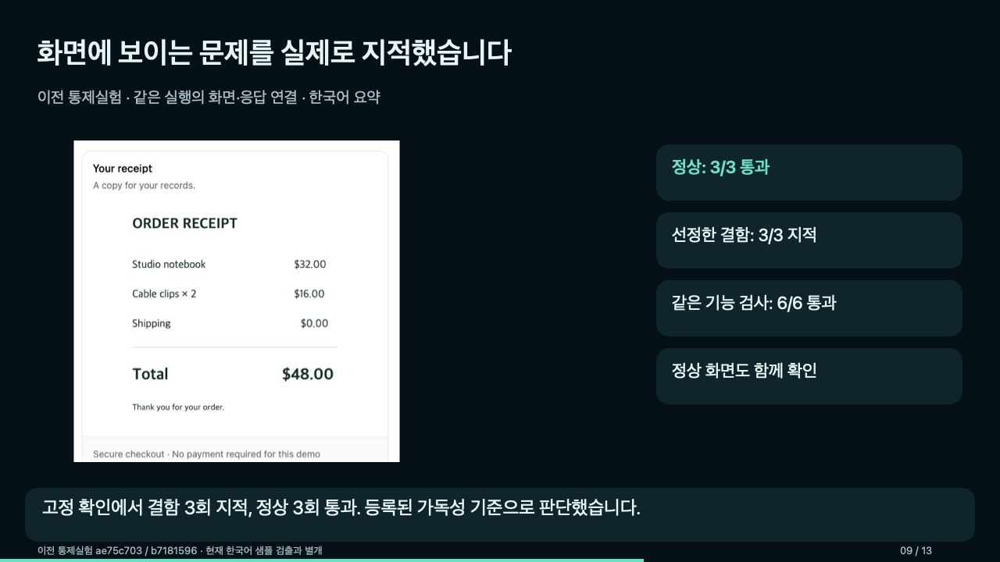
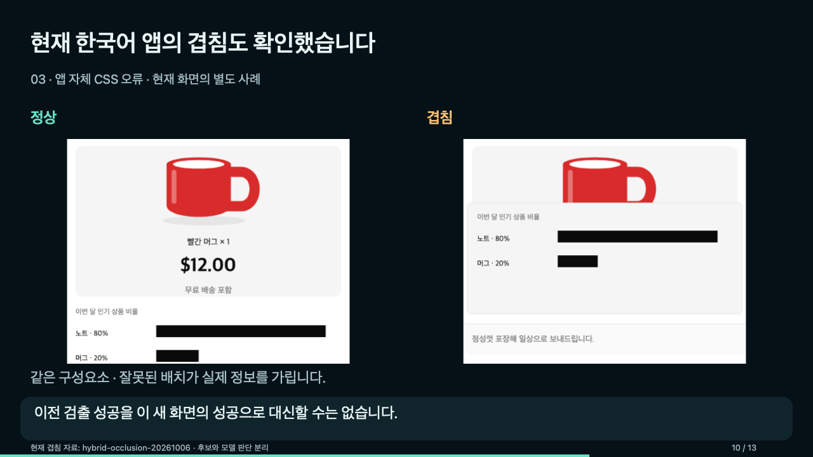
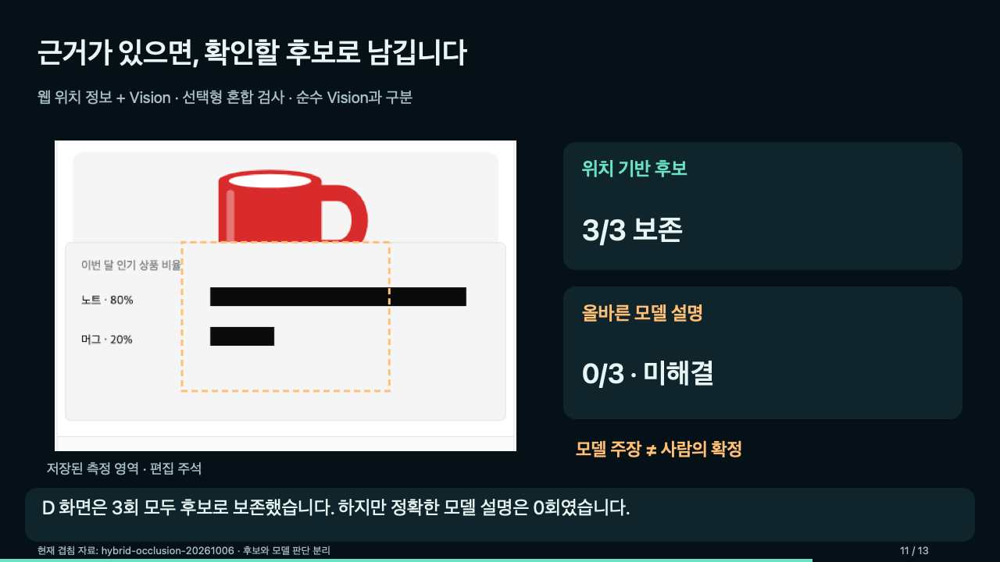
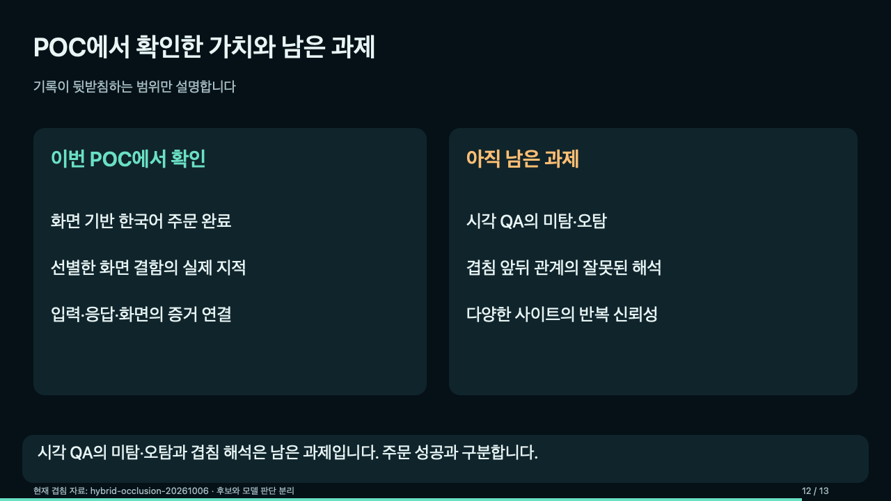
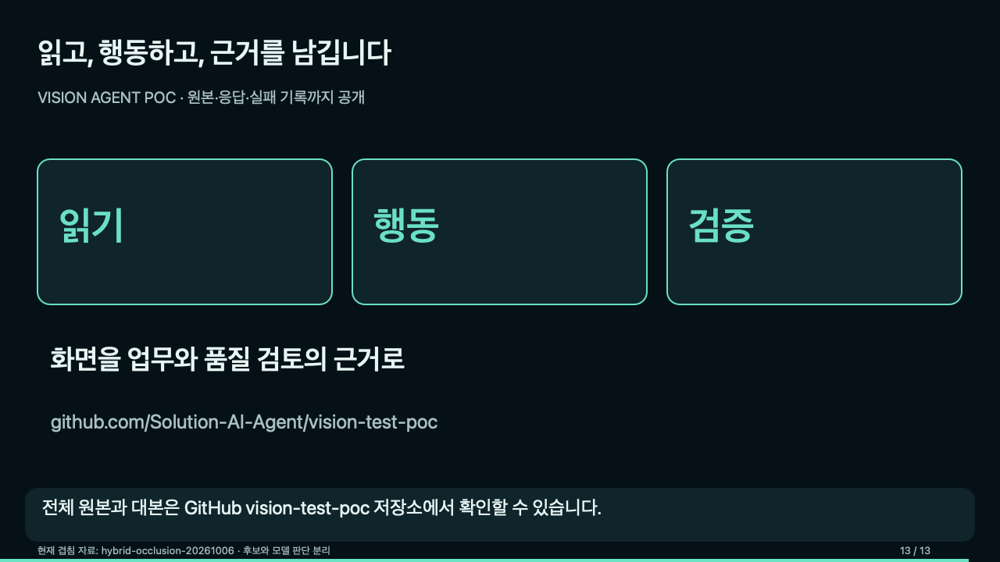